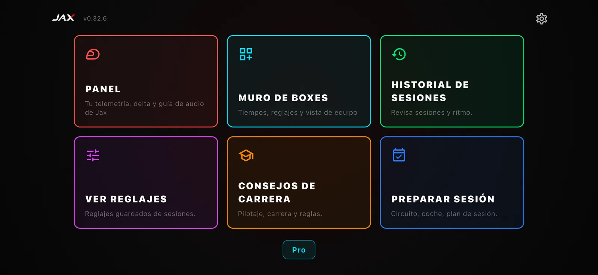
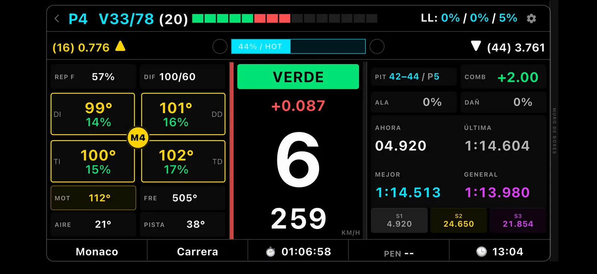
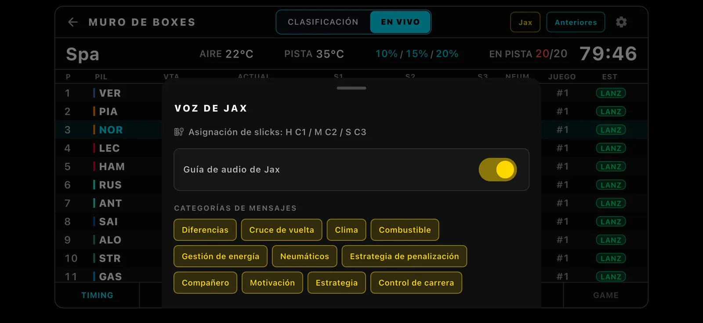
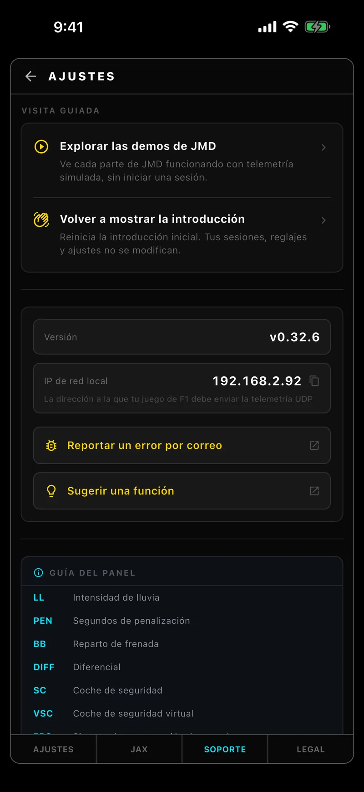

No se recibe telemetría
Comprueba que la telemetría UDP esté activada en el juego, que la IP coincida con la de la pestaña AJUSTES de JMD, que el puerto coincida y que ambos dispositivos estén en la misma red.
Compañero de sim racing para iPhone
Configura la telemetría una vez. Después prepara, compite y analiza — con tu iPhone en la misma red que tu consola o PC.
Cómo funciona
Cada guía explica una parte de la app: qué ves, qué tocar y qué es gratis o forma parte de Jax Pro.
Instala JMD en tu iPhone. Un breve recorrido inicial explica lo esencial — puedes volver a verlo desde Ajustes. No necesitas cuenta.

JMD recibe la telemetría de tu juego por tu red local. Se configura una sola vez en el juego.

Opcional, pero vale la pena. Abre Preparar sesión desde Inicio, elige circuito y coche, y repasa la pista — o cambia a la vista de sesión para planificar libres, clasificación o carrera.
Abre el Panel y sal a pista. JMD espera la telemetría y se conecta en cuanto tu juego empieza a enviarla.
Coloca tu dispositivo donde puedas leerlo de un vistazo. La leyenda integrada explica cada abreviatura del panel.

Elige la voz de Jax y las categorías que quieres oír en Ajustes, pestaña JAX. Durante la sesión, el botón Jax del muro de boxes te permite ajustarlas sin salir del coche.

Toca la pestaña del muro de boxes en el panel para ver tiempos, el mapa en vivo, tu coche, trazas, reglajes y detalles de la sesión. Vuelve a tocar para regresar al panel.

Cuando una sesión termina, JMD lo reconoce y la guarda en el historial de sesiones. Después de una carrera te dice en qué posición terminaste y te permite corregir cómo terminó la carrera si hace falta. Si la telemetría se detiene antes de que la sesión haya terminado claramente, JMD te lo pregunta.
Abre el historial de sesiones desde Inicio para encontrar cualquier sesión guardada. Cada análisis se adapta al tipo de sesión: ritmo para libres y clasificación, la historia completa para las carreras.

En carreras y sprints, abre la sesión en el historial para ver Race Replay: la torre de tiempos, las diferencias, los neumáticos y los eventos de carrera, vuelta a vuelta.
En Ajustes, la pestaña AJUSTES reúne tu estado de Jax Pro, el idioma y las unidades, la conexión UDP, el seguimiento de sesiones, la copia de seguridad en iCloud (copiar ahora, restaurar) y cuánto tiempo se conservan los datos de carrera. La pestaña SOPORTE tiene las demos integradas, el recorrido inicial, la IP del dispositivo, el envío de errores y la guía del panel. La pestaña LEGAL enlaza a los términos y a la política de privacidad.

Soporte
Comprueba que la telemetría UDP esté activada en el juego, que la IP coincida con la de la pestaña AJUSTES de JMD, que el puerto coincida y que ambos dispositivos estén en la misma red.
Asegúrate de que el dispositivo siguió conectado al Wi-Fi, de que el modo de bajo consumo no interrumpió la app y de que la consola no cambió de red.
Las IP locales pueden cambiar entre sesiones. Revisa la pestaña AJUSTES de JMD y actualiza los ajustes de telemetría del juego si es necesario.
Revisa el volumen y el modo silencio del dispositivo, y asegúrate de que la voz de Jax y las categorías deseadas estén activadas en la pestaña JAX de Ajustes o con el botón Jax del muro de boxes.
Race Replay está disponible para carreras y sprints captados con suficiente detalle. Libres, clasificación y contrarreloj tienen su propio análisis centrado en el ritmo.
No todas las sesiones del juego envían todos los campos. JMD muestra como faltantes los datos que faltan en lugar de suponerlos.